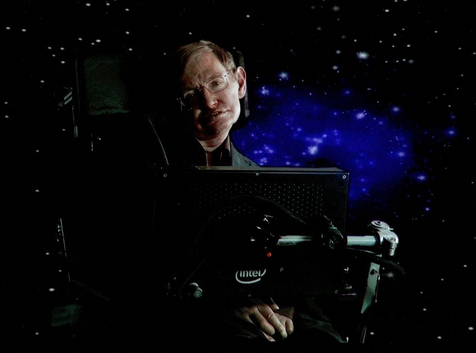

Introduction
Stephen Hawking, a brilliant theoretical physicist, cosmologist, and author, left an indelible mark on the world of science and the broader human imagination. Born on January 8, 1942, in Oxford, England, and departing from this world on March 14, 2018, Hawking's life was a testament to the power of the human spirit and the relentless pursuit of knowledge.
This tribute page is dedicated to celebrating the life and contributions of this extraordinary individual who defied all odds, transcended physical limitations, and expanded our understanding of the cosmos. Join us as we explore the legacy of Stephen Hawking, from his groundbreaking discoveries in theoretical physics to his inspirational journey through adversity.
Throughout his lifetime, Stephen Hawking's work reshaped our understanding of the universe, and his story serves as an inspiration to countless people around the world. Let us delve into the life and work of a man who, despite his physical limitations, soared to intellectual heights that few could even dream of.
Scientific Achievements
Stephen Hawking's contributions to theoretical physics and cosmology are profound. His groundbreaking work on black holes, particularly his theoretical prediction that black holes can emit radiation, known as "Hawking radiation," revolutionized our understanding of these mysterious cosmic objects.
He authored the best-selling book "A Brief History of Time," which made complex scientific concepts accessible to the general public. Hawking's ability to communicate complex ideas in a clear and engaging manner earned him widespread acclaim.
Legacy and Impact
Stephen Hawking's legacy extends far beyond the realm of science. He became a cultural icon, inspiring millions with his determination and resilience in the face of ALS. His life story was depicted in the 2014 biographical film "The Theory of Everything," which garnered critical acclaim.
Hawking's work continues to influence and inspire scientists, educators, and individuals around the world. His contributions to cosmology and his advocacy for scientific exploration will be remembered for generations to come.